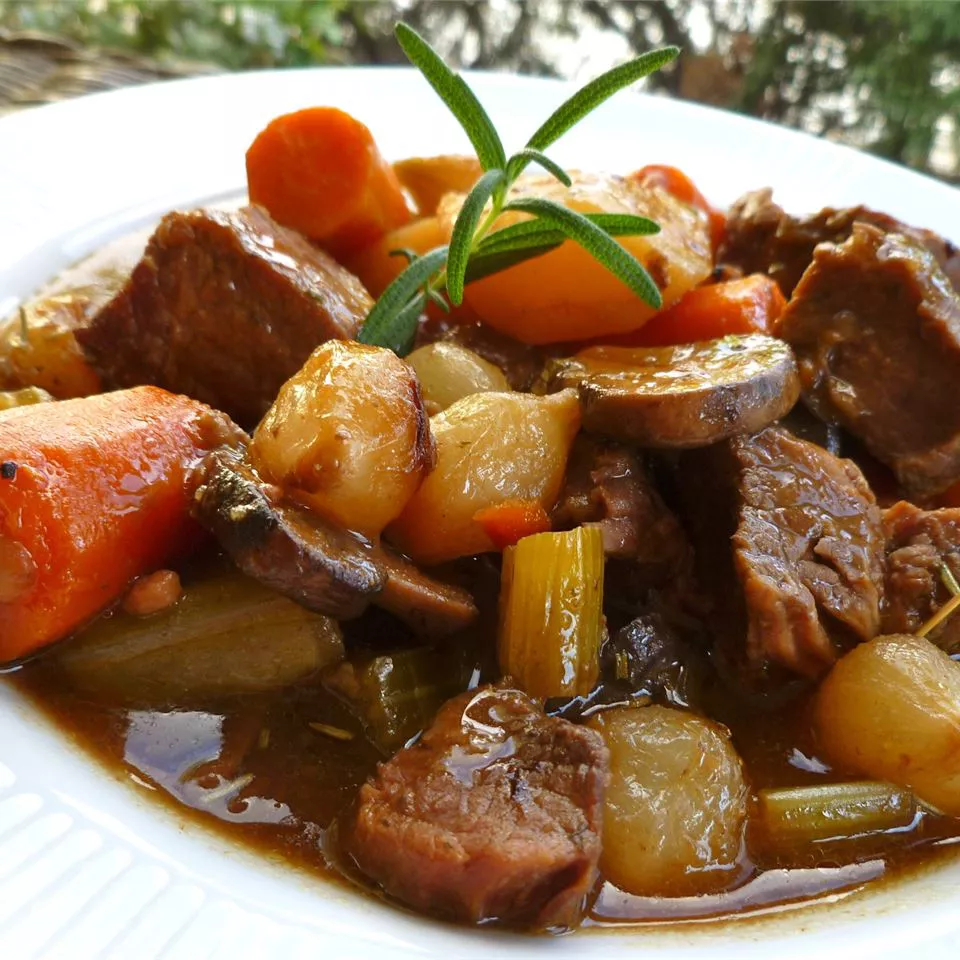

A Homemade Beef Stew Recipe
Description
A traditional stew that combines ingredients such as
potatoes, vegetables, herbs, spices, and broth to
create a rich and savory dish. Serves 10.
Ingredients
- 3 tablespoons vegetable oil
- 2 pounts cubed beef stew meat
- 4 cubes beef bouillon, crumbled
- 4 cups water
- 1 teaspoon dried rosemary
- 1 teaspoon dried parsley
- 1/2 teaspoon ground black pepper
- 3 large potatoes, peeled and cubed
- 4 carrots, cut into 1 inch pieces
- 4 stalks celery, cut into 1 inch pieces
- 1 large onion, chopped
- 2 teaspoons cornstarch
- 2 teasponns cold water
Steps
- Heat oil in a large pot over medium-high heat;
add beef and cook until well browned
- Dissolve bouillon in 4 cups water and pour
into the pot; stir in rosemary, parsley,
and pepper. Bring to a boil; reduce heat
to low, cover, and simmer for one hour.
Stir in potatoes, carrots, celery, and onion
- Dissolve cornstarch in 2 teaspoons of cold
water; stir into stew. Cover and simmer until
beef is tender, about 1 hour.